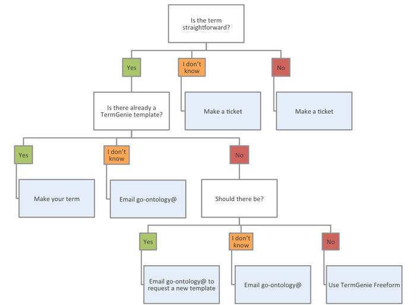
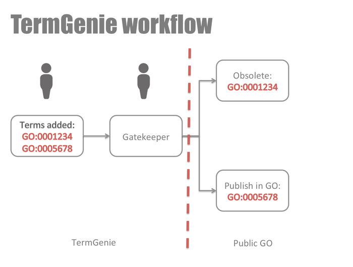
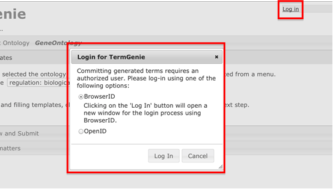
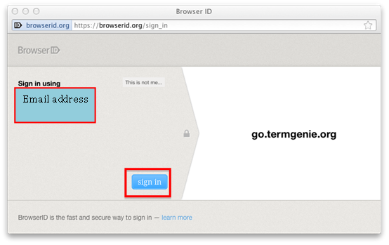
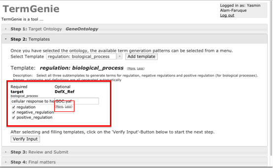
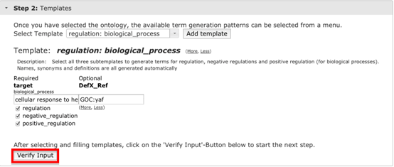
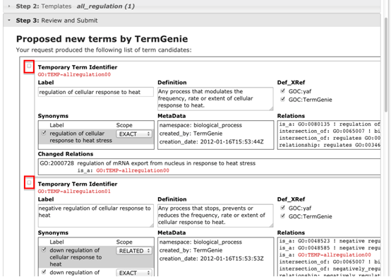
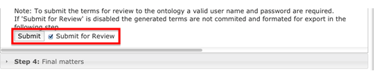
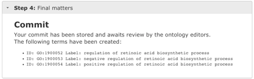
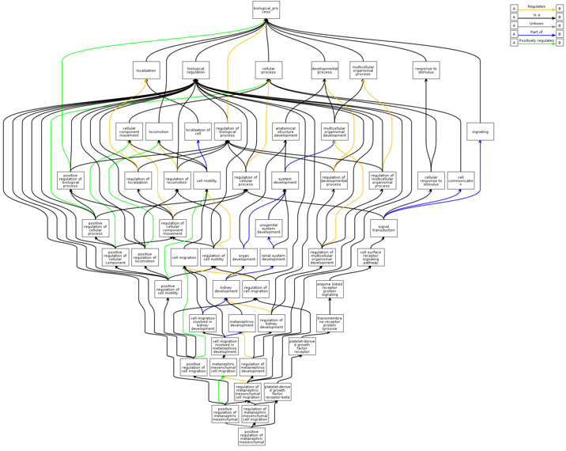

TermGenieGO – Help
When to use TermGenie - Decision Tree

Permanent Identifiers
Every term that is requested through TermGenie receives a stable and permanent Gene Ontology ID.
All requests are reviewed by a gatekeeper, a GO ontology editor, before being made public.
The majority of classes are approved upon review but, occasionally, classes may be rejected.
In the latter case, the class will still be preserved in the ontology file as an obsolete
class, which should not be used for annotation.

Step By Step Tutorial
- Click ‘Log-in’ at top right of page at
http://go.termgenie.org/
(If you already are a registered user, you can skip the step number 3).
- Create or use your a browser log-in by selecting BrowserID and clicking
on ‘Log In’ using your email address; you will then be prompted
for a password

- Send your user ID (your email address) to the TermGenie help desk:
help@go.termgenie.org They can
grant you permission to submit term requests.
- Click ‘sign in’ at browser user id

- This will take you back to the TermGenie front page at the step 2 Template stage.
- From the tree, select the type of term you are seeking to create. It is possible to search for templates in the search box.
- You can add more than one of the same or a different template by
clicking ‘Add template’ allowing the creation of many
new terms at the same time.
- Paste in the go term id or type the name of the term you
are requesting a child term for.

- Click on the ‘Verify Input’ button. This will create GO:TEMP ids, name
and definitions for the future terms in the preview and submit page.

- Confirm your selection by clicking on the small tick-box on the
left of each new term. Then click ‘Submit for Review’ followed by ‘Submit’
(the ‘Preview’ button should change to ‘Submit’ when you tick the ‘Submit
for Review’ check box).


- Your new term ids in the final step are created for your new GO term
with a new GO id starting GO:1900xxx, which will be put into
the OBO file within a few days after review of a senior editor, e.g.:
ID: GO:1900034 Label: regulation of cellular response to heat
ID: GO:1900035 Label: negative regulation of cellular response to heat
ID: GO:1900036 Label: positive regulation of cellular response to heat

-
You can preview the term hierarchy via a chart, with the new and updated
terms by clicking on the ‘Generate Image button at Step 3.
This will open a new window/tab displaying a QuickGO style chart, which
has your new term(s) incorporated.
NB: The link to the images are temporary and will no longer be viable
after 30mins. So if you need the image for longer, you need to save it.

- The new GO terms will be reviewed by a senior GO editor before they
are placed in the OBO file. When accepted, an email will be sent to you
and the terms will become visible and available to you within a couple
of days.
- In the meantime you are able use the new go id in your appropriate
editor (e.g.: protein2go, which recognizes TermGenie generated GO ids)
– this will save time later and you won’t need to go back to a
pending item to add the new term once it is in QuickGO or AmiGO etc.
- Currently, once logged in, your TermGenie session will be valid for
the duration of your browser being open. To create another set of new
terms you can reset TermGenie to the 'Step 2: Template' page
by refreshing the page.
- However, if you do encounter a problem, you may have to restart the
browser. You may also need to do this if you get various error messages
during various stages of TermGenie when the GO ids are being generated.
If an error persists or TermGenie is not responding at all, then please
send an email to the TermGenie help desk: help@go.termgenie.org
Using TermGenie for ontologies other than GO
The TermGenie architecture is designed to be used with any obo or owl ontology, but at the moment some detailed configuration
may be required. You can find out more on the TermGenie project page.